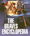

|

|
The
Braves Encyclopedia
Caruso,
Gary
Philadelphia Book Clinic Certificate of Award |

|
Politics
and the Class Divide
Working People and the Middle Class Left
Croteau,
David
Finalist for Transformational Politics Book Award, American
Political Science Association |

|
Cultural
Politics and Social Movements
edited
by Darnovsky, Marcy, Barbara Epstein and Richard Flacks
Outstanding Academic Book, Choice |

|
The
Two Faces of Political Apathy
DeLuca,
Thomas
Finalist for Transformational Politics Book Award, American
Political Science Association |

|
Reshaping
Ethnic and Racial Relations in Philadelphia
Immigrants in a Divided City
Goode,
Judith and Jo Anne Schneider
Finalist for the Robert E. Park Award, Community and Urban
Section of the American Sociological Association |

|
It
Comes from the People
Community Development and Local Theology
Hinsdale,
Mary Ann, Helen M. Lewis and S. Maxine Waller
Co-winner for the Transformational Politics Book Award, American
Political Science Association |

|
The
Politics of Diversity
Immigration, Resistance, and Change in Monterey Park, California
Horton,
John
Robert E. Park Award, Community and Urban Section of the
American Sociological Association |

|
Gardens
of Philadelphia and the Delaware Valley
Klein,
Jr., William M., photographs by Derek Fell
Philadelphia Book Clinic Certificate of Award |

|
Caribbean
Currents
Caribbean Music from Rumba to Reggae
Manuel,
Peter with Kenneth Bilby and Michael Largey
Outstanding Academic Books, Choice
Gordon K. Lewis Memorial Award for Caribbean Scholarship, Caribbean
Studies Association |
|
Honey,
Honey, Miss Thang
Being Black, Gay, and on the Streets
Pettiway,
Leon E.
Nominated for the Ninth Annual Lambda Literary Awards, category
of Transgender |

|
The
Philippine Temptation
Dialectics of Philippines-U.S. Literary Relations
San
Juan, Jr., E.
Outstanding Academic Book, Choice |

|
Dangerous
Knowledge
The JFK Assassination in Art and Film
Simon,
Art
Association of American University Presses Book Jacket Award |

|
Brooklyn!
An Illustrated History
Snyder-Grenier,
Ellen M.
New York Society Library's New York City Book Award for Best
Book |
|